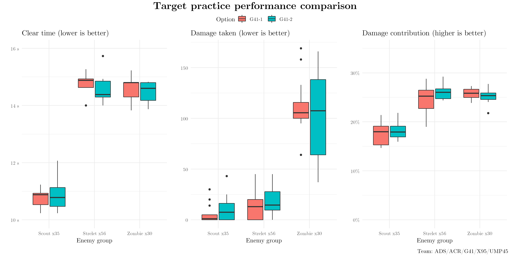
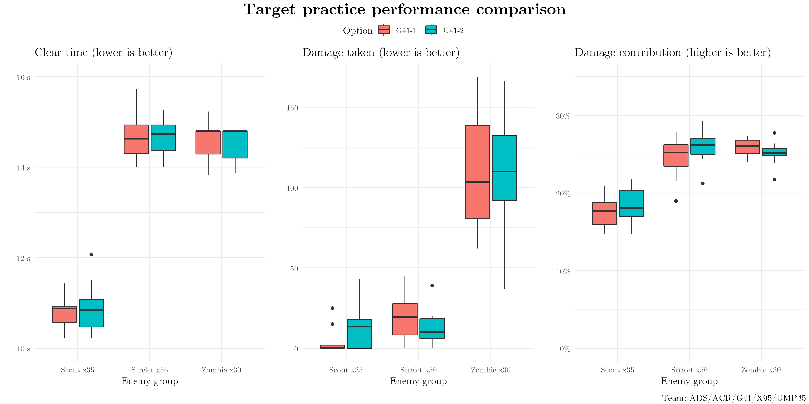

This is an extra associated with my skin/position analysis of Type88. Many of the results when comparing her skins were extremely close, and to provide one point of reference I'd like to get some experimental results when there is certainly no true difference. In this case, we'll do some runs with a normal ARSMG including G41, record them, change nothing about G41, and record some more in a second column.
The expected amounts of variation will change by echelon and fight, but this may help better clarify what amounts of variation are meaningful, and which are just as easily explained by normal RNG.

So, if you are too reckless in interpreting data, you may falsely conclude that G41-2 helped clear the Strelets faster, but led to more damage taken against the Scouts & Strelets.
These were done by arbitrarily labeling the first half as G41-1 and the second half G41-2. An equivalent arbitrary assignment, alternating between 1 and 2, gives the following results instead:

Things look a bit more even this time. You still may be able to convince yourself that G41-1 will help you take less damage against the Scouts (but more against the Strelets, this time!).
In short - differences on this scale can easily arise even when there are no true performance differences. Picking something that looks a little higher will not necessarily give you the best one.
I'd include a note on how dramatic of a difference you could get with a malicious actor assigning low points to one label and high points to another, but (a) I'd hope you trust me a little more than that, and (b) you might as well just make up the data then.